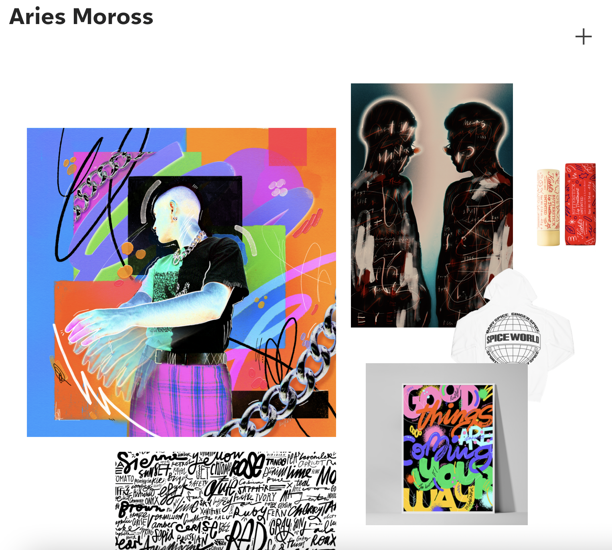
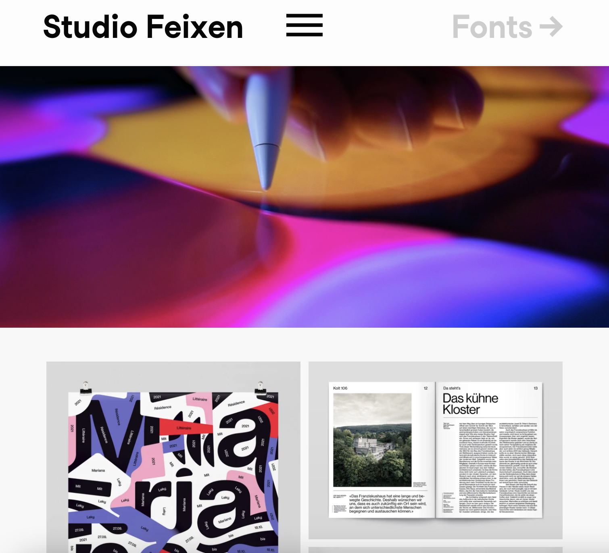

I like how this portfolio incorporates some cool UI animation touches to display a neat design. The projects seem to be on a wheel that spins to the next project when clicked which adds a level of playfulness to the design.
This particular portfolio caught my eye because of the bright colors on it's first page. I like how the first page is sort of a collage of projects, but then once you scroll down the page, there's a more organized flow to the design. There's also a neat feature on the page, a plus sign, that once clicked, brings up the navigational menu.
This is probably my favorite out of the three portfolio designs. At first, it may seem like a lot is going on with this design, however, there's still a level of cohesiveness to it. Each page has animation to make the projects come to life. I especially love the Animated Covers on page 9.